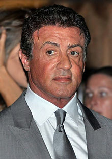
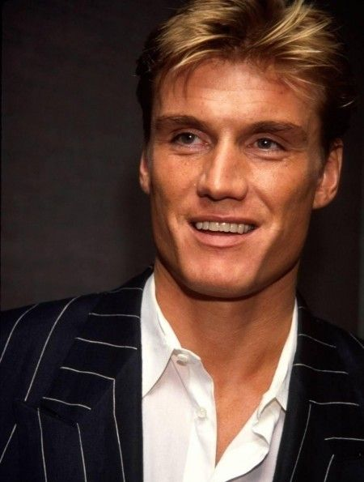

Actores

Sylvester StalloneSylvester Gardenzio Stallone (Hell's Kitchen, Nueva York; 6 de julio de 1946),
conocido simplemente como Sylvester Stallone, es un actor, guionista,
productor y director de cine estadounidense.
|

Carl WheatersCarl Weathers (Nueva Orleans, Luisiana; 14 de enero de 1948) es un actor estadounidense y ex-jugador de fútbol americano en Estados Unidos y Canadá.
Se hizo conocido por haber interpretado a Apollo Creed en la saga de películas Rocky.
|

Dolph LundgrenHans Lundgren, de nombre artístico Dolph Lundgren (Spånga, Estocolmo, Suecia, 3 de noviembre de 1957), es un actor sueco,
cuya actividad polifacética incluye trabajos en el cine como director, guionista y productor.
|